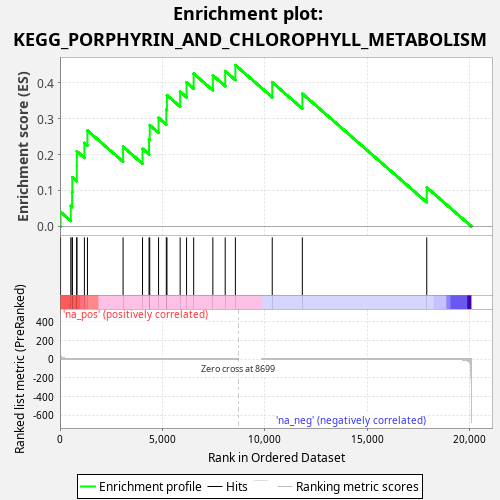
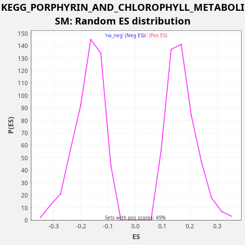

| Dataset | rnk |
| Phenotype | NoPhenotypeAvailable |
| Upregulated in class | na_pos |
| GeneSet | KEGG_PORPHYRIN_AND_CHLOROPHYLL_METABOLISM |
| Enrichment Score (ES) | 0.4492402 |
| Normalized Enrichment Score (NES) | 2.6426687 |
| Nominal p-value | 0.0 |
| FDR q-value | 0.0012554734 |
| FWER p-Value | 0.008 |

| SYMBOL | RANK IN GENE LIST | RANK METRIC SCORE | RUNNING ES | CORE ENRICHMENT | |
|---|---|---|---|---|---|
| 1 | CP | 27 | 39.917 | 0.0403 | Yes |
| 2 | FTH1 | 528 | 2.701 | 0.0571 | Yes |
| 3 | MMAB | 592 | 2.271 | 0.0956 | Yes |
| 4 | FECH | 602 | 2.207 | 0.1368 | Yes |
| 5 | BLVRB | 820 | 1.348 | 0.1677 | Yes |
| 6 | COX10 | 821 | 1.348 | 0.2093 | Yes |
| 7 | HCCS | 1191 | 0.754 | 0.2326 | Yes |
| 8 | CPOX | 1340 | 0.595 | 0.2669 | Yes |
| 9 | EARS2 | 3081 | 0.105 | 0.2219 | Yes |
| 10 | UROS | 4030 | 0.049 | 0.2163 | Yes |
| 11 | ALAS1 | 4349 | 0.038 | 0.2421 | Yes |
| 12 | UGT1A7 | 4383 | 0.037 | 0.2822 | Yes |
| 13 | HMOX1 | 4813 | 0.026 | 0.3025 | Yes |
| 14 | UGT1A6 | 5192 | 0.018 | 0.3253 | Yes |
| 15 | COX15 | 5223 | 0.018 | 0.3655 | Yes |
| 16 | UGT1A1 | 5868 | 0.010 | 0.3750 | Yes |
| 17 | GUSB | 6181 | 0.008 | 0.4012 | Yes |
| 18 | UGT1A4 | 6528 | 0.005 | 0.4256 | Yes |
| 19 | BLVRA | 7465 | 0.001 | 0.4206 | Yes |
| 20 | HMOX2 | 8068 | 0.000 | 0.4323 | Yes |
| 21 | PPOX | 8565 | 0.000 | 0.4492 | Yes |
| 22 | HMBS | 10365 | -0.000 | 0.4013 | No |
| 23 | UROD | 11835 | -0.004 | 0.3697 | No |
| 24 | ALAD | 17911 | -0.328 | 0.1087 | No |

{kind=link}
{kind=link}